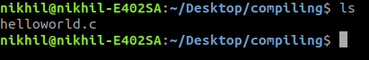

The easiest & simplified way available to learn
What have we done? Why you should learn from here?
We have compiled the required, important key concepts of the programming language 'C' here in very brief and in a very easy to learn manner in a very comfortable language such that each and everyone of you can learn it in a very effective manner. We have written this book making sure that it does cover the theoretical as well as practical key concepts that a first time programming learner also can grasp things, and get benefit from it like our other friends did.
TIP: It covers each and every important concept for the university exams. All the best !!
The following are the topics which we will be covering, click on them to learn about them.
1. Header File:
Every C Program start with inclusion of Header File. These Header File include the definitions of the common functions such as "printf",
"scanf" etc. Without inclusion of these header files your compiler will not be able to understand the common function that you might have
use in program.
Syntax:
#include<(name of the header file)>
some common header files are:
a. stddef.h: Defines several useful types and macros.
b. stdint.h: Defines exact width integer types.
c. stdio.h: Defines core input and output functions.
d. stdlib.h: Defines numeric conversion functions, pseudo-random network generator, memory allocation.
e. string.h: Defines string handling functions.
f. math.h: Defines common mathematical functions.
2. Main Method Declaration:
After including header files now we declare a “main function “which will include all the code which compiler will execute.
Syntax:
return_type main ()
{
All the code inside curly braces
}
Example: int main () , void main ()
3. Variable Declaration:
Now every program needs variables to store data. Therefore, we should declare the variables at the start of the program inside main
function. We cannot use any variables without declaring it in C and variables should be declared before operation is performed on it.
Syntax:
data_type name_of_the_variable ;
Example: int a=10; and int num;
Note: inside the main function every variable declaration line, every logical line which perform any mathematical operation should
end with semicolon (; ) otherwise while compiling program compiler will throw a compilation error.
4. Body:
After declaring variables now it’s time to write code which will generate the desire output. it can be anything such as mathematical
manipulation, searching, sorting etc.
Example:
printf (“Hello“); // it will print “Hello“ on screen.
5. Return:
The last part in any C program is the return statement. The return statement refers to the returning of the values from a function.
This return statement and return value depend upon the return-type of the function. For example, if the return type is void, then there
will be no return statement. in any other case, there will be a return statement and the return value will be of the type of the specified
return-type.
Example:
int main
{
printf (“Hello “);
return 0;
}
Note: We can use any integer at place of “0 “in return statement but it’s a good coding practice to use “0 “that’s why i have used
it.
This is how every C program is written.
6. Comments:
Let’s Also talk about comments here Many people underestimate comments. Comments are one the best resources to understand what the code
will do. A good program is well commented out. Comments don’t affect the functionality of code. it is not executed by the compiler.
In A C program we can give comments in two ways:
1. Single line comment: They are generally written in single line as the name suggest.
To write these comments just start the comment statement with two forward slashes (“// “).
Example: // This is a comment.
2. Multiple line comment: They are generally written in multiple line.
To write a multiple line comment syntax followed is:
/* This is
a multiple
line comment. */
Now let’s write our first C program which is a simple program to print “Hello World” on screen:
Line 2
[#include<'stdio.h'>]: All the line that start with # in C are processed by preprocessor which is a program invoked by the compiler.
Preprocessor takes the C program that is made by the user to produce another C program this C program will not contain any line starting
with # and comments. All these things are happening behind the scenes when we are compiling the program. in the above example preprocessor
copies the preprocessed code of stdio.h to our file. The ‘.h’ files are called header files in C. These header files generally contain
declaration of functions. We need ‘stdio.h’ for the ‘printf’ function used in the program.
Line 5
[int main ()]: The code written inside main function is the code which contain all the logic and all the important code which will produce
our desire output.
Line 6
[{ }]: Curly braces define the scope and are mainly used in functions and control statements like if, else, loops. All function starts and
end with curly brackets.
Line 8
[printf (“ “)]: it is a standard function which is used to print a string on to the screen.
“;“ Semicolon marks the ending of the statement here.
Line 10
[return 0]: it will return the value from main ().
Now after making our first program it’s time to compile it and understand what does compiling means. But before we go and compile our
program, we need to see the use of a very important function: “scanf “.
scanf ()
scanf () function stands for scan formatting, suppose if we need to take input from the user then in such type of cases, we use scanf()
function, the header file needed for scanf (), and printf () function is ‘#include<'stdio.h'>’. This function is also terminated by a
semicolon (;).
Syntax
1. Single Variable:
Example:
scanf (“%format_specifier “, &variable_name_where_you_want_to_store_the_user_input);
2. Multiple Variable:
Example:
scanf (“%d%f%c “, &a,&b,&c);
Format Specifiers:
a. %d for integers.
b. %c for characters.
c. %s for strings.
d. %f for float values and many more which are explained in the form a table in later section which will be used later.
Compiling:
Compiling is the process to convert the code written by us humans to convert it into machine level language because in the end computer
only understand 0’s and 1’s. They don’t understand what does printf means or any other thing that you write in the text editor. To convert
our written code into machine level language a program is used which is called Compiler.
Let’s see the steps to compile a program:
These steps are followed on Ubuntu GCC compiler
1. Save your C program with file extension .c

helloworld. c already exist in my machine in as you can see.
2. Then compile it using below command.
Gcc -Wall filename. c -o filename
-Wall enables all compilers warning messages.
-o is used to specify output file name. if we do not use this option, then an output file name is a. out by default.
Program has been successfully compiled and an executable have been formed with a name hello_world
3. After compilation executable is generated and we run it by using following command
. /filename
After running the executable, we can see “Hello World“ on the terminal.
Now let’s take a look inside the compiling process and understand what are the different process involved.
Compiling have 4 process mainly:
1. Pre-Processing
2. Compilation
3. Assembly
4. Linking
Now after running the following command we can get all the files that are involved int the compilation process
“gcc -Wall -save-temps filename. c -o filename “
1. Pre-Processing:
a. This phase includes a Removal of comments
b. Expansion of Macros
c. Expansion of included files.
2. Compiling: The next step is to compile filename. i and produce filename. s. This file is assembly level instructions.
3. Assembly: in this step filename. s is converted into fileame. o by assebler. This file contain machine level instructions. The
function call like printf () are not resolved.
4. Linking: This is the final step. in this step all function are linked with their definitions. Linker knows where all these function
are implemented. Linker all add some extra code which required when the program end or start. And the final product after all these step
is the executable file which we run to get the desired output.
Conclusion:
in this chapter we have learnt
a.history of C.
b. Structure of C Program.
c. We learnt Compiling Process.
d. We also wrote our first C program “Hello World“.
Now after learning the structure of C Programming and writing our first C program which was a simple Hello World Program. We should move on to an important topic of programming in general which is Variables and Data types. Knowledge of Variables and Data is important because most of the times we need to take input from user for taking input from user we should also know what the user would be entering that is the data type of the user input. Therefore, in this chapter we will learn variables which would help us to store different things in program and also data type in C.